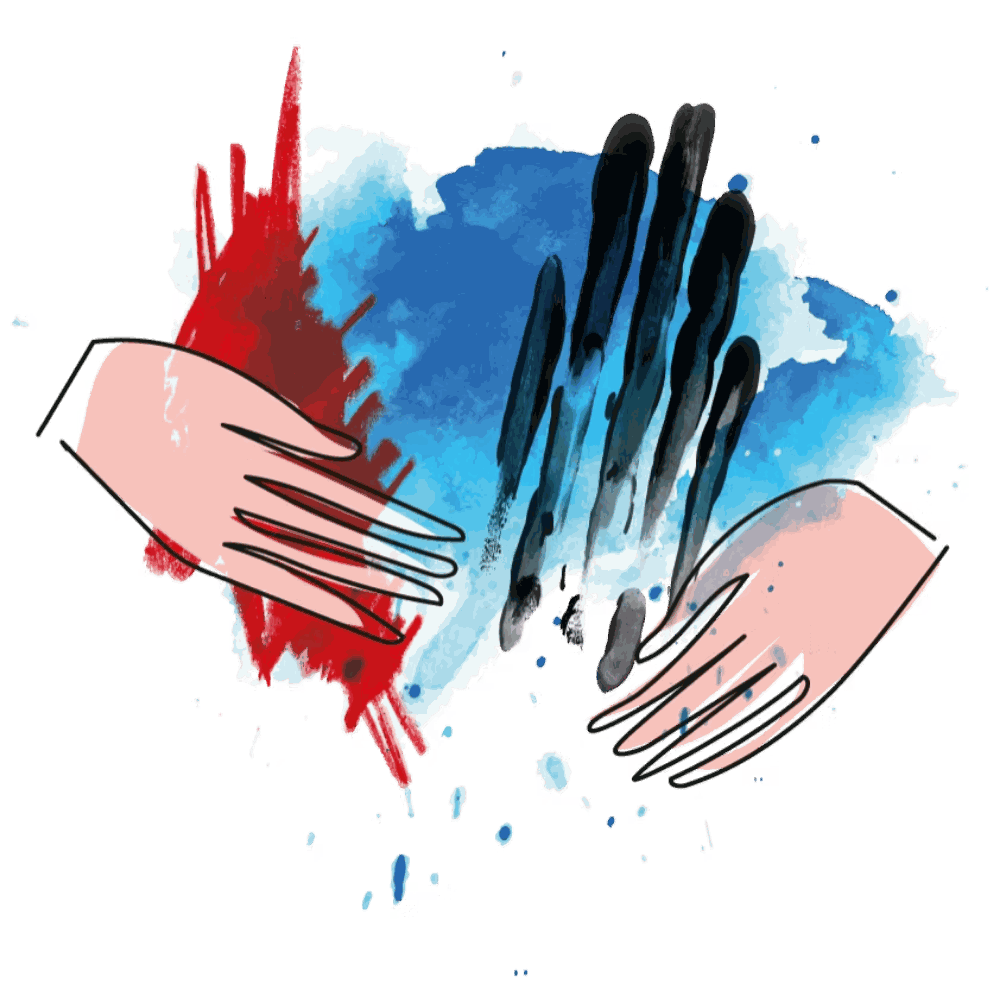
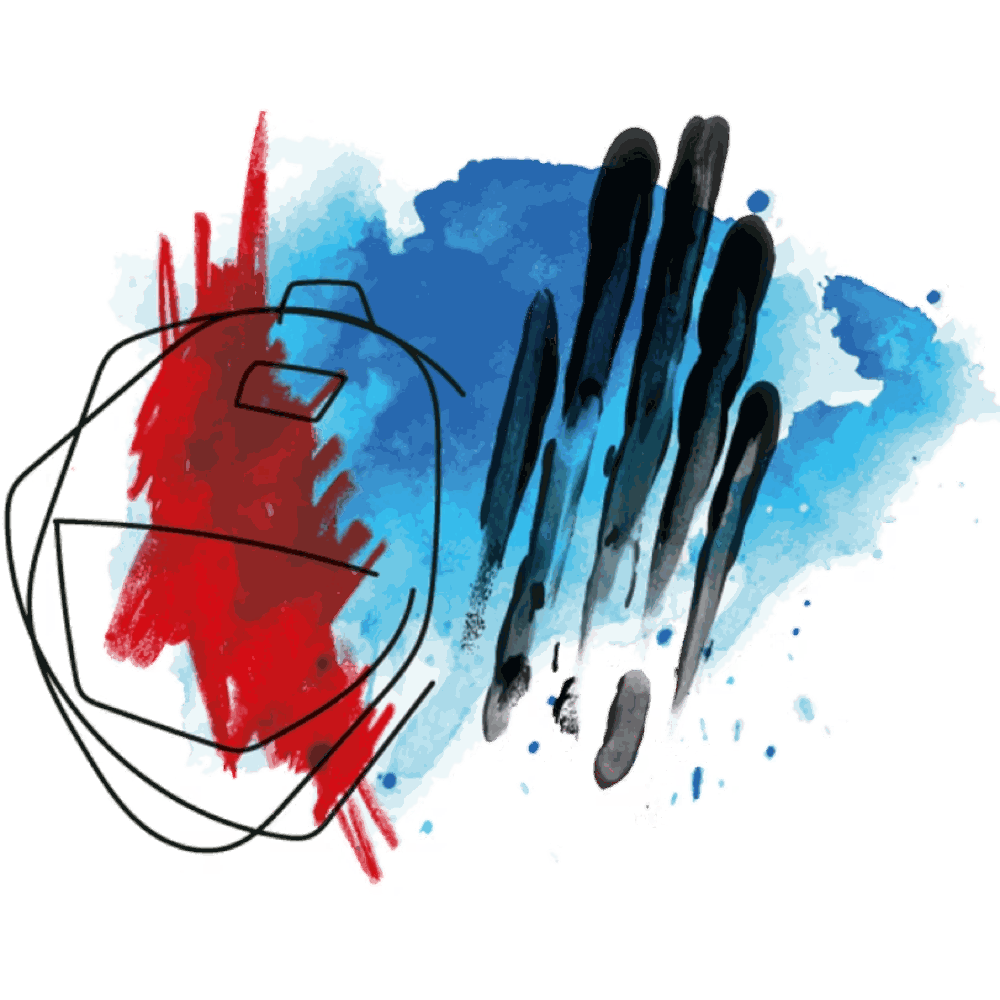
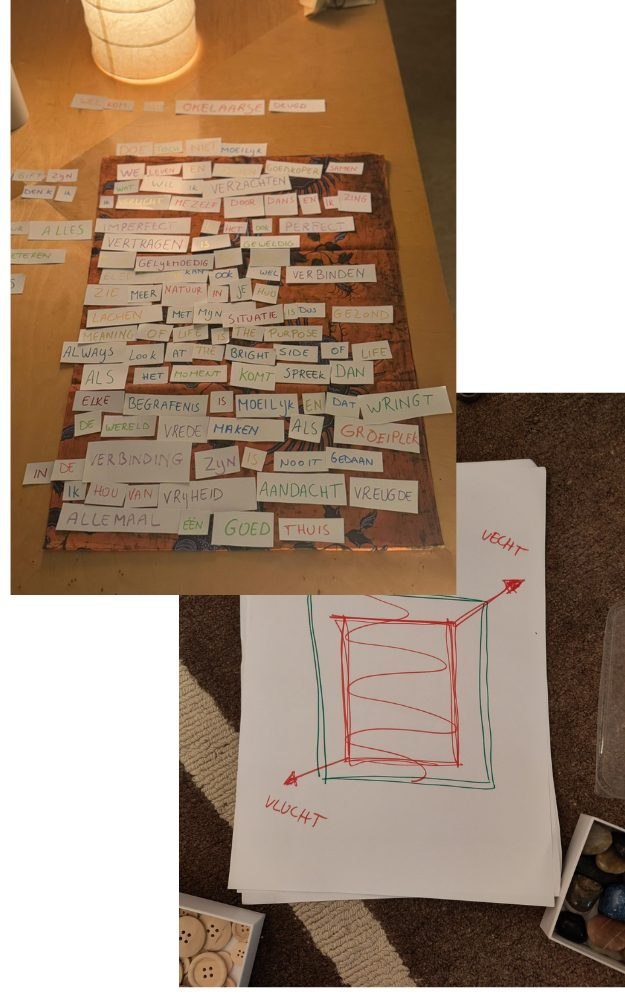
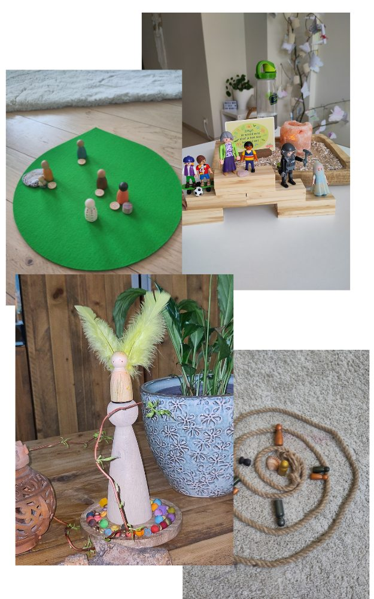
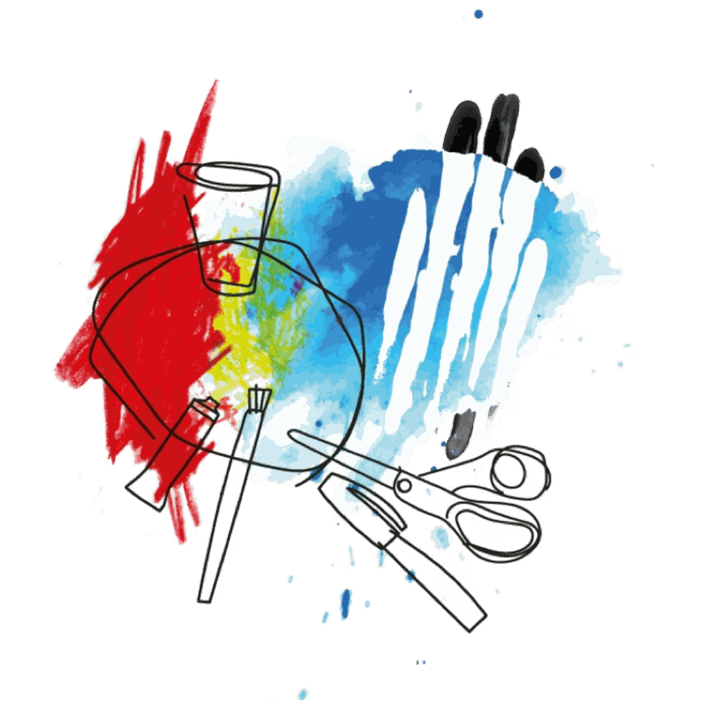
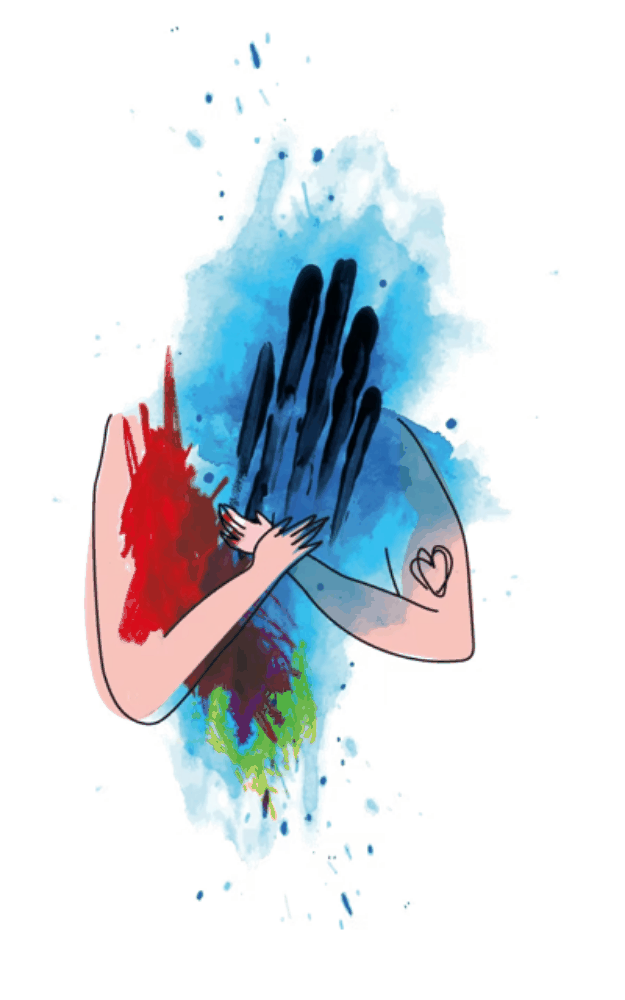
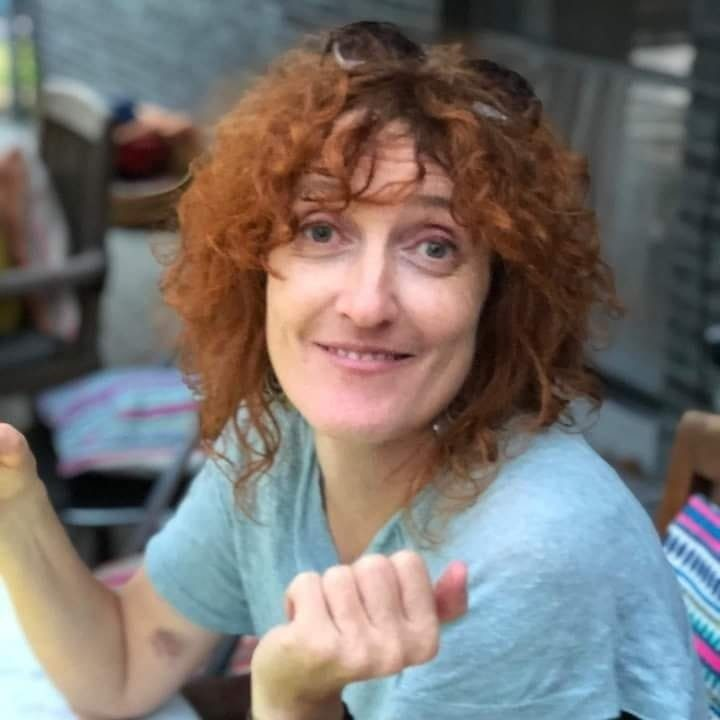

Luisteren en zien Meeleven en meedragen Samen op pad
Als rouw- en verlies counselor luister ik in de eerste plaats naar jouw verhaal, het unieke verlies dat je mee draagt, wat het met je doet, waar het vast zit, hoe het zich toont.

Leren omgaan met wat weg is
-
Of het nu gaat om het overlijden van een dierbare...
-
Of een ernstige ziekte, scheiding, fysieke beperking, relatiebreuk, vrienschapsbreuk, ontslag, verlies van verleden of toekomst...
-
Iedereen krijgt in zijn leven te maken met rouw en verlies.

Een ruimte om te helen
Ik kijk en luister op creatieve manieren naar wat niet zichtbaar is, breng het samen met jou weer naar buiten, in beweging. Op een manier en een tempo dat bij jou past.

Alles wil gevoeld worden
Als mens zijn we gemaakt om te voelen. In onze cultuur is er een voorkeur voor lichtere gevoelens zoals blijdschap en opgewektheid. Somberte, boosheid, verdriet worden minder gewaardeerd en vaak als lastig ervaren.
Maar alle emoties willen gevoeld worden. Of ze nu licht, donker, intens of subtiel zijn. Door ze ruimte en aandacht te geven, leren we ze te omarmen en ermee om te gaan. We ontwikkelen zo een innerlijke kracht en kunnen met vertrouwen onze authentieke zelf tevoorschijn laten komen.

Een huis voor iedereen
Kinderen, jongeren en volwassenen.
Rouw kent geen leeftijd, verlies kent geen verschillen.
Elk verlies, hoe klein of hoe groot, is hier welkom.

Wie ben ik
Mijn verhaal is er één van veel verbindingen én van veel verlies.
Dood, scheiding, adoptie, depressie, ziekte.
Struikelstenen op mijn pad.
Ik leerde vertragen,
luisteren, zien, doorleven, bewegen, omarmen.
Ik gaf een andere wending aan mijn pad.
Mijn inzichten en expertise deel ik met jou.

Sonja Cassiman
- Bachelor Sociaal Verpleegkundige
- Vives Hogeschool en De Bleekweide vzw, Rouw- en verliescounselor
- ’t Klein Geluk Academie, Integratief Kinder- en jongerentherapeut
- ’t Klein Geluk Academie, Traumasensitief coachen
Contact
Of heb je een vraag?
Neem dan zeker contact met me op!
Oppemstraat 8
1861 Wolvertem info@sonjacassiman.be
+32 498 47 42 56